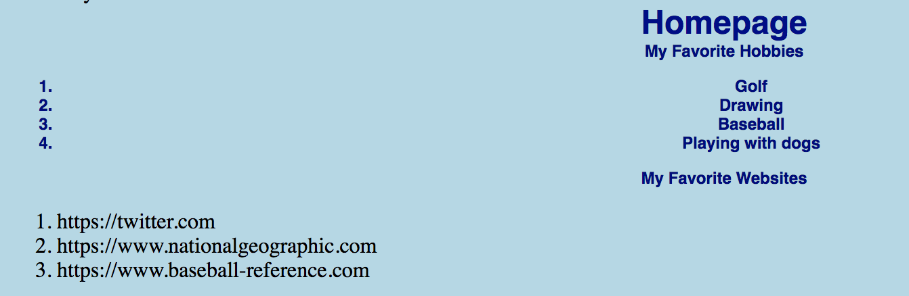

Week 7 we worked with an external style sheet and began using CSS. This was a difficult week for me as some things seemed to work easily and other things did not want to change the way I wanted them. This was definitely a week I came in for office hours to figure out what I was missing and see what I needed to do to fix the problems.
Being able to add color to my work code was fun and being able to stylize a webpage makes the process more interesting.